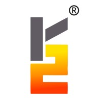

[MISSION TIMELINE]
Sep 2025 - Present
Software Engineer Intern
- Reduced secrets misconfiguration by 30% with Vault-backed schemas
- Accelerated deployment cycles by 20% via Jenkins shared library refactors
- Designed CI/CD validation enforcing security gates across 40+ services
May - Aug 2025
ML Developer Intern
- Enabled risk scoring for 10,000+ clients via IFRS9-compliant Bayesian models
- Engineered 50+ risk features across financial, behavioral, operational signals
Jan - Sep 2024

DevOps Engineer Intern
- Accelerated release cycles by 40% with Jenkins, Docker, Terraform
- Built serverless log analytics pipeline handling 50K+ events/sec on AWS
- Improved security via Keycloak SSO and AWS control integrations
May - Aug 2023
DevOps Engineer Intern
- Deployed containerized microservices on AWS using Docker and Ansible
- Reduced deployment errors by 30% and incident resolution time by 25%
HOVER TO ILLUMINATE